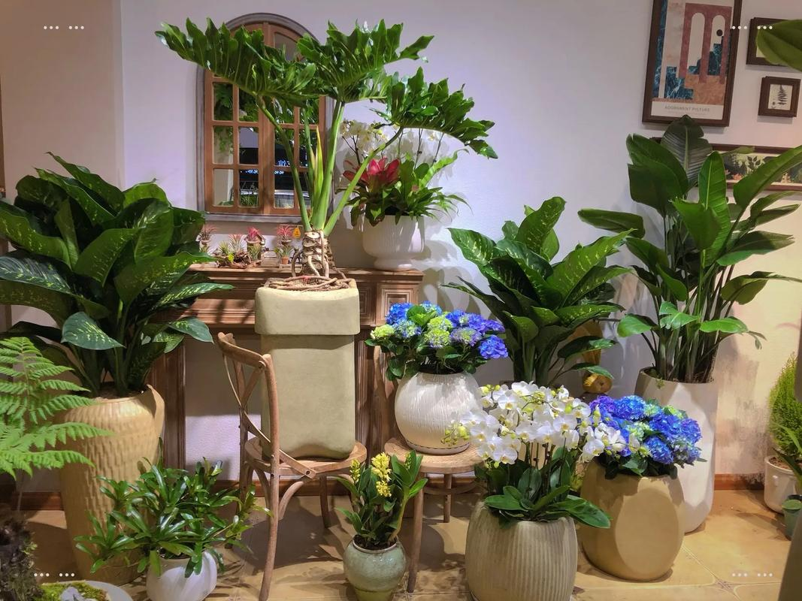
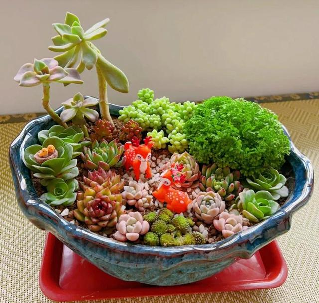

室内盆栽摆放示范
盆栽植物是家居绿化的首选，养护时要注意选择合适的盆器，确保排水良好。浇水要遵循"见干见湿"原则，即土壤表面干燥后再浇透水。室内盆栽需要定期旋转花盆，保证植物各部位均匀接受光照。每月施用一次稀释的液体肥料，冬季减少施肥频率。定期检查叶片背面，预防红蜘蛛等害虫。

多肉植物组合
多肉植物喜欢阳光充足、通风良好的环境，夏季需适当遮阴。使用透气性好的专用多肉土，盆底铺一层陶粒增强排水。浇水要"宁干勿湿"，春秋生长季可适当增加水量，夏季高温和冬季低温时要严格控制浇水。繁殖多采用叶插或分株法，春秋季最为适宜。注意预防介壳虫，发现后可用酒精棉签擦拭。
• 浇水壶：长嘴设计
• 修枝剪：锋利耐用
• 园艺铲：不锈钢材质
• 喷雾瓶：细雾喷洒
• 园艺手套：防刺保护
• 土壤测试仪：检测pH值
• 移植铲：移栽小苗
• 园艺绳：固定植物
有机园艺强调不使用化学合成的肥料和农药，通过自然方式维持植物健康。厨余堆肥是最简单的有机肥料制作方法，将蔬菜果皮、落叶等混合发酵后使用。利用大蒜水、辣椒水等自制天然杀虫剂，对蚜虫等常见害虫有驱避作用。种植伴生植物如金盏花可以驱虫，香草类植物能吸引益虫。覆盖物如树皮、稻草可以保墒抑草，腐烂后还能改良土壤。
雨水收集系统为植物提供更优质的水源，同时节约水资源。轮作制度可以防止土壤养分单一消耗和病虫害积累。选择适应当地气候的乡土植物品种，通常更抗病虫害且养护简单。定期观察植物生长状况，早期发现问题并及时处理，是有机园艺成功的关键。